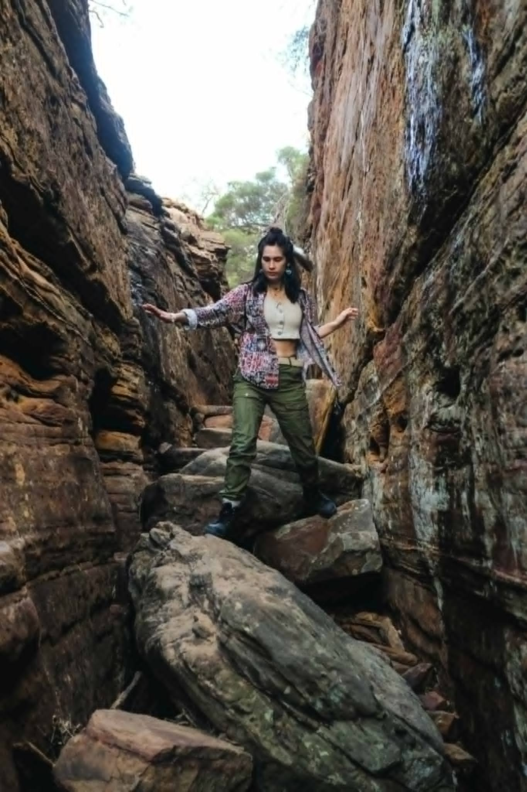
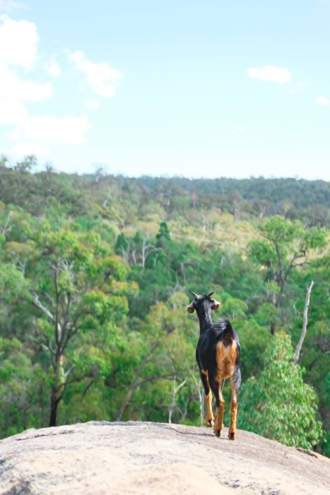
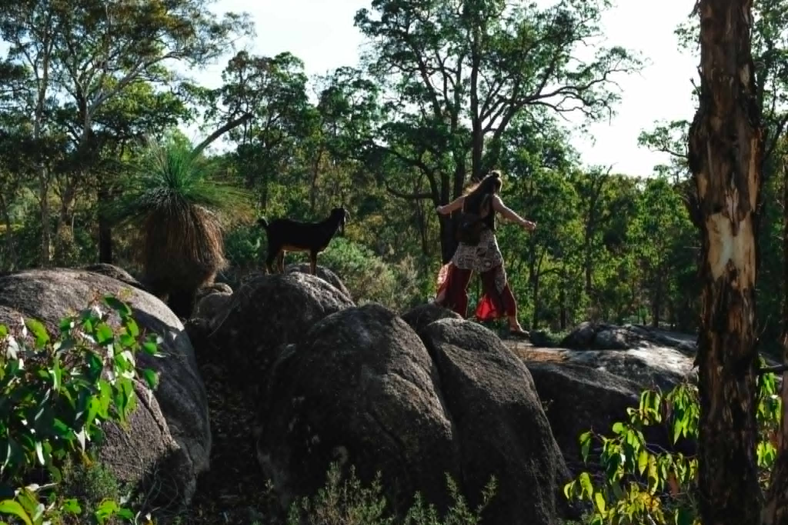
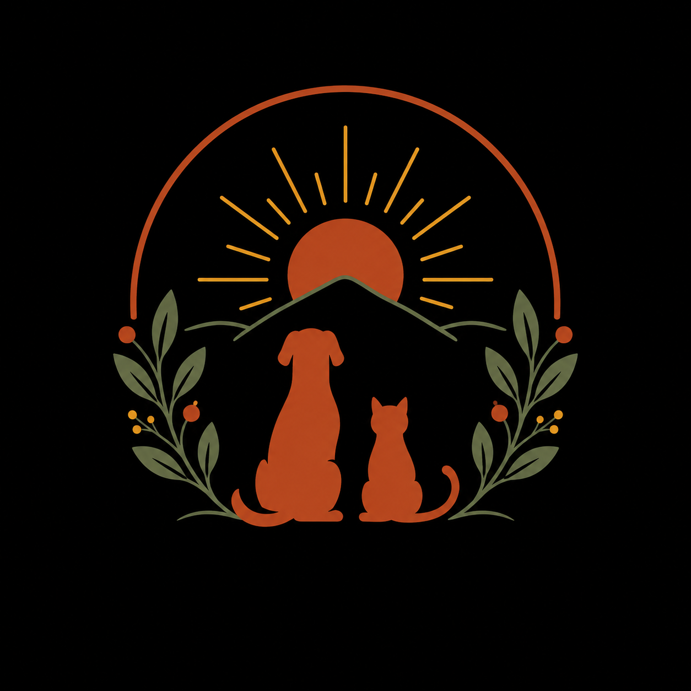
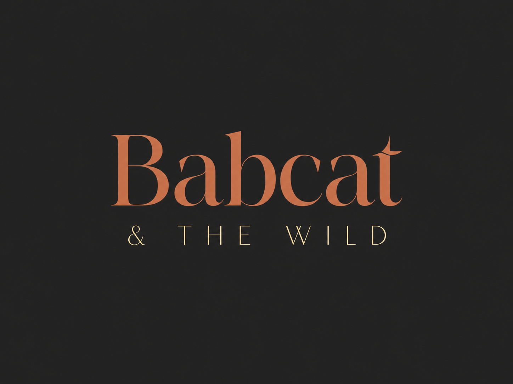

Nutrition animale
Le propylène glycol dans les croquettes
Cet additif se cache dans beaucoup de gammes « semi-humides ». Comment le repérer sur une étiquette, et pourquoi l’éviter.
Lire la suiteBabcat & The Wild — fondations du design system, réconciliées avec la DA
Les animaux sont ma boussole.
Jamais de blanc pur, jamais de gris froid, jamais de noir #000 — même dans les ombres (teintées brun chaud). Répartition 60-30-10 : 60 % crème, 30 % anthracite et sauge, 10 % terracotta.
Trois tuiles PNG ≤ 30 Ko (assets/img/textures/), jamais de
feTurbulence live. La texture se sent, ne se voit pas : plissez les yeux,
seules les couleurs restent.
Crème + grain anthracite 4 %
fond global (body)
Kraft + fibre 9 %
cartes & encadrés
Anthracite + grain crème 3 %
footer, sections signature
Règles de contraste vérifiées (calculs documentés dans
tokens.css) : terracotta brut réservé aux grands titres et au
décor ; texte terracotta courant en #A84E1E ; sauge et bois miel jamais
en texte sur fonds clairs ; sur kraft, texte anthracite uniquement ;
le jaune pastel ne porte jamais de texte, nulle part.
Échelle modulaire fluide (ratio 1.125 mobile → 1.333 desktop, base 16 → 18px). Polices auto-hébergées : Robelia (titres), Alegreya Sans (lecture), Stellar (étiquettes : sur-titres, tags, boutons — capitales courtes uniquement), Wanderlust (script). Licences Envato ✓ + OFL ✓.
Les animaux sont ma boussole
Comprendre l’animal, respecter sa nature
Aménager son monde
Nutrition, comportement, garde & soins
Une maison-refuge à Bruxelles
Same song, different species
Le chat est un carnivore strict, le chien un carnivore latent. Respecter leur physiologie, c’est déjà prendre soin d’eux. Chaque consultation commence par une écoute : l’animal d’abord, l’humain avec — il n’y a pas de mauvais humain ici, seulement des questions qui n’ont pas encore trouvé leur réponse.
Consultations à domicile, à Bruxelles et alentours, ou en visio selon la demande.
Les animaux sont ma boussole.
Un intérieur beau pour l’humain, juste pour l’animal
L’aménagement animal-friendly
La spécialité signature : parcours muraux, hauteurs, points d’eau, plantes safe, cachettes. L’intérieur est un territoire vivant — découvrir la consultation.
Avec les animaux, je suis partout chez moi.
Bibliothèque BEM réutilisable (components.css). Cibles tactiles
≥ 44px, focus visible terracotta sur tous les éléments interactifs.
Cet additif se cache dans beaucoup de gammes « semi-humides ». Comment le repérer sur une étiquette, et pourquoi l’éviter.
Lire la suite
Un chat qui urine hors de sa litière ne se « venge » pas : il parle. Les causes les plus fréquentes, et par où commencer.
Lire la suite
Toxiques, irritantes ou parfaitement sûres : le tri complet des plantes d’intérieur et de jardin quand on vit avec un chat.
Lire la suiteConsultation
Bilan personnalisé, transition alimentaire, lecture des compositions — respecter la physiologie de votre animal.
Réserver une consultation★ Spécialité signature
Créer un intérieur beau pour l’humain, juste pour l’animal. Parcours, hauteurs, litières, plantes safe : le territoire est vivant.
DécouvrirBabeth a compris Musca en une visite. Trois semaines plus tard, plus une seule griffade sur le canapé — et un chat visiblement plus apaisé.

Les 4 gestes de l’herbier (DA §5) : scotch (fixer), annotation (commenter),
surligneur (souligner), soleil (ponctuer). Versions statiques — les poses et
tracés s’animeront en Phase 3 (GSAP), avec état final identique en
prefers-reduced-motion.



Humpty Doo, 2018
Le chat est un carnivore strict : son intérieur n’est pas un décor, c’est un territoire vivant — hauteurs, cachettes, points d’eau, chemins.

Deux ambiances types pour juger les contrastes en situation : un hero sur fond clair avec le logo typographique, et une section signature sur fond anthracite texturé.

Les animaux sont ma boussole.
Comprendre l’animal, respecter sa nature, aménager son monde.
Nutrition, comportement, garde et aménagement animal-friendly — à domicile à Bruxelles et alentours, ou en visio.

★ Spécialité signature
Un intérieur beau pour l’humain, juste pour l’animal.
L’aménagement animal-friendly unit architecture d’intérieur et bien-être animal : parcours muraux, hauteurs, points d’eau, plantes safe, cachettes. Votre intérieur devient un territoire vivant.
Découvrir l’aménagement